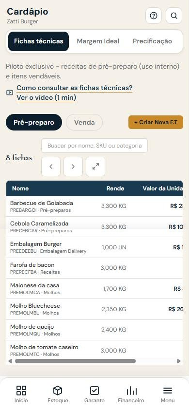

Ficha técnica completa: do custo do molho ao preço do lanche em cada canal
O mesmo lanche tem custos e descontos diferentes no salão, no delivery próprio e nos aplicativos. Como montar a ficha que sustenta a conta e decidir a margem de cada canal.
Publicado em 16/11/2026
A ficha técnica de muito restaurante lista o pão, a carne, o queijo e para por aí. O molho de receita própria, a cebola caramelizada e a farofa de bacon, feitos na panela e porcionados depois, entram com custo chutado ou nem entram.
O resultado aparece no preço. Um lanche com custo errado na ficha tem preço errado em todos os canais. E cada canal tira do preço uma fatia diferente, em comissão, taxa e imposto.

"A conclusão é direta: sem ficha técnica, não existe controle de CMV."Vinícius Zanetti, no capítulo Estrutura do livro Restaurante no Controle
Esta matéria trata de dois pontos: a ficha que inclui o que é preparado antes do serviço e o preço de cada canal a partir dela. O cálculo do custo de um lanche simples está em Preço do lanche: por que copiar o concorrente falha, e a conta do aplicativo com o mesmo preço do balcão, em Preço no iFood igual ao balcão tira o seu lucro.
O que é ficha técnica de pré-preparo?
É a ficha de tudo o que a cozinha produz antes e usa como ingrediente: molhos, carne temperada, massa de pizza, cebola caramelizada. Ela tem ingredientes, quantidades, modo de preparo e, principalmente, rendimento: quanto sai da panela.
O custo do pré-preparo é o total dos ingredientes dividido pelo rendimento. Neste exemplo, se a receita de um molho rende 2 kg, o custo de cada grama é o custo da receita dividido por 2.000. Esse custo por grama vai para a ficha do lanche, multiplicado pela quantidade servida.
A Abrasel separa dois papéis da ficha. A operacional, usada pela equipe, traz ingredientes, quantidades, modo de preparo, tempo e utensílios. A gerencial, usada pela gestão, traz custo por ingrediente, custo total, CMV do item e base para precificação. A ficha de pré-preparo precisa dos dois lados.
Como montar a ficha técnica de um lanche?
- Monte primeiro as fichas de pré-preparo. Cada molho e cada preparo com rendimento medido, não estimado.
- Liste o lanche ingrediente por ingrediente. Inclusive o pré-preparo, na quantidade que vai no prato.
- Acerte as unidades. Compra em caixa, uso em grama, receita em colher. Defina a conversão uma vez e use sempre a mesma. Insumo que perde peso no preparo usa o fator de correção.
- Separe o que muda por canal. Embalagem, sachê e talher entram no custo do delivery e não no do salão.
- Registre cada mudança. Preço de insumo novo, receita ajustada, gramatura nova. Ficha sem data de alteração não diz se ainda vale.
A Abrasel lista o que acontece quando o último passo falha: o preço do insumo sobe e a ficha não é revisada, o rendimento real muda e ninguém ajusta, a receita sofre pequenas alterações informais. O efeito, segundo a cartilha, é um CMV teórico ilusório e preço defasado.
Quem pode mexer na ficha técnica?
A cozinha conhece a receita. A gestão conhece o custo e o preço. Quando qualquer um altera a ficha, ninguém sabe qual versão vale. Uma divisão que funciona: o chef propõe a receita e a mudança, a gestão aprova custo e preço, e a equipe da linha vê a ficha operacional, com quantidade e modo de preparo.
No capítulo Garante, o livro explica por que a equipe precisa entender a ficha, e não só obedecer.
"Quando o cozinheiro entende que a ficha técnica protege a margem do restaurante, e que margem saudável significa negócio estável e emprego garantido, ele passa a tratar aquele documento de forma diferente."Vinícius Zanetti, no capítulo Garante do livro Restaurante no Controle
Como calcular o preço do lanche em cada canal?
A base é a fórmula que o blog de parceiros do iFood ensina: o custo do prato dividido por um menos a soma da margem desejada, da comissão e da taxa de pagamento. Para valer em qualquer canal, entra também o imposto sobre a venda.
A margem de contribuição é o que sobra do preço depois do CMV, das taxas e do imposto, para pagar equipe, aluguel e lucro. Na DRE do livro, as deduções vêm antes dela: impostos, taxas de cartão e taxas de delivery. Por isso o mesmo lanche não tem o mesmo cálculo em todo canal.
Neste exemplo, o imposto é de 6% da venda e a maquininha leva 3% no salão. No iFood, o Plano Entrega cobra 23% de comissão e 3,2% de pagamento online, segundo o blog de parceiros da plataforma (valores vigentes na atualização de 23/06/2026). A tabela mostra quantas vezes o custo da ficha o preço precisa ser.
| Neste exemplo | Descontos do canal | Margem desejada | Preço = custo × |
|---|---|---|---|
| Salão | 9% | 60% | 3,23 (CMV de 31%) |
| iFood Entrega, mesma margem | 32,2% | 60% | 12,82 |
| iFood Entrega, margem aceita | 32,2% | 40% | 3,60 (CMV de 28%) |
A segunda linha mostra o erro de exigir a mesma margem em todo canal: o preço precisaria ser quase 13 vezes o custo, e nenhum cliente paga isso. A terceira mostra a decisão que cabe ao dono: aceitar uma margem menor no aplicativo, sem descer do mínimo de 35% que a Zatti usa como referência, e cobrar mais do que no salão. O livro põe a margem de contribuição por prato e por canal entre os indicadores da etapa Estrutura.
No delivery próprio, a conta é a do salão com a embalagem somada ao custo e a taxa do meio de pagamento que o cliente usa. No 99Food e em qualquer aplicativo, vale a taxa do contrato da loja, e não a de um vizinho.
Como o Zatti Hub faz isso
No Zatti Hub, app de gestão da Zatti, a ficha técnica e o preço ficam no módulo Cardápio. Pela ficha de funções do app, conferida em 16 de novembro, o trabalho se divide assim:
| O dono faz | O app calcula |
|---|---|
| Monta fichas de pré-preparo e de venda, com ingredientes, sub-receitas, rendimento, foto e modo de preparo | Custo da ficha e custo por unidade |
| Cadastra as conversões de unidade | CMV % de cada prato e margem de contribuição |
| Usa a calculadora de Margem Ideal e define os preços de Salão, Delivery próprio, iFood e 99Food, com a comissão de cada um | Preço sugerido por canal, já com comissão e imposto |
| Altera a ficha quando a receita ou o insumo muda | Versão de cada alteração |
Os papéis seguem a divisão descrita acima: o chef pode criar ficha e sugerir preço, quem aprova é a gestão, e a equipe vê a ficha sem custo nem preço.
O que o app não faz
- Não importa o cardápio do iFood nem do 99Food.
- Não atualiza o preço nas plataformas. O preço definido no app precisa ser trocado no portal de cada uma.
- Comissão e preço são digitados. Se o contrato com a plataforma muda, a taxa precisa ser atualizada no app.
- Não se integra a PDV. O CMV real continua vindo da contagem de estoque, e a comparação com o custo das fichas está em CMV teórico x CMV real.
O app faz a conta de cada canal. A decisão de quanto de margem aceitar em cada um continua sendo do dono.
Perguntas frequentes
O que é ficha técnica de pré-preparo?
É a ficha do que a cozinha produz antes e usa como ingrediente, como molhos e carne temperada. Ela registra ingredientes, modo de preparo e rendimento, e dá o custo por grama que vai para a ficha do lanche.
Como calcular o preço do lanche no iFood?
Divida o custo da ficha, com embalagem, por um menos a soma da comissão, da taxa de pagamento, do imposto e da margem desejada. Use a taxa do contrato da sua loja, que aparece no portal do parceiro.
Preciso ter a mesma margem em todos os canais?
Não dá. Com a comissão do aplicativo, manter a margem do salão pode exigir um preço impraticável. O dono define uma margem por canal, sem descer do mínimo de 35% de margem de contribuição.
O Zatti Hub atualiza o preço no iFood?
Não. O app calcula o preço sugerido por canal com a comissão e o imposto informados, mas não importa o cardápio nem altera o preço nas plataformas.
Fontes
- Abrasel: Cartilha Custo de Mercadoria Vendida (CMV) para bares e restaurantes (janeiro de 2026), consultada em 16/11/2026.
- iFood, blog de parceiros: taxas do iFood (valores vigentes na atualização de 23/06/2026), consultado em 16/11/2026.
- iFood, blog de parceiros: como precificar o cardápio do delivery, consultado em 16/11/2026.
- Vinícius Zanetti, Restaurante no Controle: capítulos Estrutura (fichas técnicas, DRE gerencial e indicadores) e Garante (treinamento).
- Zatti Consultoria: página do Zatti Hub e ficha interna de funções do app, conferida no perfil de teste em 16/11/2026.